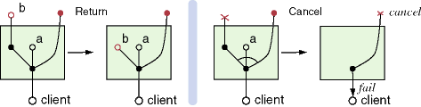
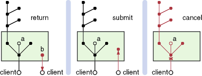
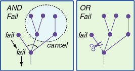
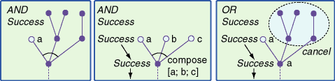
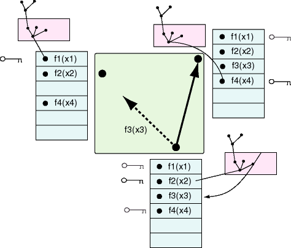

MetaPRL Distributed Prover
MetaPRL is a distributed theorem prover. The distribution
mechanism is implemented as a layer just above the refiner, and
below the tactic definitions. The distribution is transparent,
in the sense that tactics do not explicitly specify parallelism.
The tactic mechanism is sufficiently abstract that parallelism
is added below the tactic layer, and the distributed preserves
the behavior of the tactics. In fact, the tactic code that has
been developed over the past decade can be used without needing
to consider distribution, with one caveat: tactics may fail if
they communicate with one another using effects (which we don't
model in the distributed prover).
One critical feature that we implement is fault-tolerance.
As problems get larger, the more we want to distribute tasks,
and the tasks are more likely to run longer. Proofs represent
a substantial investment: in some cases the proof procedure may
run for several days over multiple machines. It is important to
handle failures, so that proofs will not be lost due to process
or network failures, and we also want to handle joins, where
a new processor is assigned to the pool working on a proof task.
 The process of proving generates
proof trees. Each node in a proof is refined to a list
of subgoals. Each branch in the tree may be and-branching,
meaning that all subgoals are required for a successful
proof; or a branch may or-branching, where any of
the subgoals are sufficient to form a proof. A typical proof tree
fragment is shown at the right. The root node produces an and-branch
with two subgoals. The right subchild is an or-node, and either
of the subgoals is sufficient to prove the goal.
The process of proving generates
proof trees. Each node in a proof is refined to a list
of subgoals. Each branch in the tree may be and-branching,
meaning that all subgoals are required for a successful
proof; or a branch may or-branching, where any of
the subgoals are sufficient to form a proof. A typical proof tree
fragment is shown at the right. The root node produces an and-branch
with two subgoals. The right subchild is an or-node, and either
of the subgoals is sufficient to prove the goal.
Tactics
The tactic mechanism is used to generate proof trees.
Each rule in a logic produces a primitive tactic. Primitive tactics
are always and-branching. The following digram is an example of
a tactic defined in Itt_logic.

The ML value defined by this rule has the following type: val
imp_intro : string -> tactic. Tactics are implemented
as functions that take a proof goal, and produce a list of subgoals,
and an extract that summarizes the proof step. The tactic
module defines the following set of operations for proving with
tactics.
module type Refiner =
sig
type term
type extract
type tactic = term -> term list * extract
val compose : extract -> extract list -> extract
val andthen1 : tactic -> tactic -> tactic
val andthen2 : tactic -> tactic list -> tactic
val choose : tactic list -> tactic
end
Each extract defines a partial proof tree; the compose
function builds larger fragments from pieces. A tactic either
succeeds, by returning a list of subgoals, or it fails by
raising an exception.
There are three tacticals: the andthen1 tactical
is defined informally as follows: the tactic (andthen1 tac1
tac2) applies tac1 to a goal t, producing
subgoals t1, ..., tn. The second tactic tac2 is
applied to each of these subgoals, and the subgoals it produces
are concatenated to form the final result.

The andthen2 tactic is similar to the anthen1
tactic, but it allows different tactics to be applied to the subgoals.
The tactic (andthen2 tac [tac1; tac2; ...; tacn]) tactic
requires that the tac tactic produce exactly n
subgoals, and taci is applied to subgoal i.

The choose tactical allows searching
with tactics. The tactic (choose [tac1; tac2; ...; tacn])
applies each tactic tac1, tac2, ...
in turn until the first one succeeds.

Scheduler
 There is a great deal of parallelism
in tactic-tree proofs: the branches of the proof considered independently.
The branching factor is typically bounded by a constant, but the
depth of the tree can grow to be quite large. for performance
reasons, it is not desirable to completely thread the proof because
the contention between threads would be quite large.
There is a great deal of parallelism
in tactic-tree proofs: the branches of the proof considered independently.
The branching factor is typically bounded by a constant, but the
depth of the tree can grow to be quite large. for performance
reasons, it is not desirable to completely thread the proof because
the contention between threads would be quite large.
In the MetaPRL architecture, the base of the proof
saved by a scheduler, which produces subjobs for independent
threads. A diagram of the general architecture is shown in the
figure at the right. A client (in this case, the MetaPRL
proof editor) submits a job to the scheduler containing a proof
goal, and the tactic to be applied to it.
The scheduler does not perform and active computation on the
proof goal, but it has subthreads to do computation for it. There
are seven operations that the scheduler performs:
- issue a new job to a subthread (produce),
- ask a subthread for an unfinished job (consume),
- receive a result from a finished subjob (return),
- cancel a running thread (cancel),
- accept a job from a client (submit),
- return a result to a client (client-return),
- accept a cancellation from a client (client-cancel).
The produce operation produces a new job that can be
assigned to a new thread. The consume operation does the
opposite: it asks a running thread to return a portion of its
proof tree to the scheduler. The closed circles in the diagram
correspond to unfinished goals; the open circles are finished
goals that have been associated with a value.

When a thread is finished, it performs the return operation
to give the result to the scheduler. The scheduler can also cancel
a thread, if the job is no longer needed.

The client has three operations it can perform. It may submit
a job, it can cancel a job, and a value can be returned
from from scheduler to the client.

The scheduler is implemented in the module Thread_refiner_ens.
The scheduler maintains a constant sized pool of threads that
can be assigned to subjobs. The scheduler maintains several job
queues: the running queue list the currently running threads,
and their locations in the proof tree; the pending queue
lists nodes of the proof tree that haven't been assigned; and
the waiting queue is a list of running threads that have
been signalled. When a new job is submitted by a client, the scheduler
places the job in the pending job pool, and enters the
scheduler loop:
- If there is an idle thread, and a pending job, assign the
thread to the job, and move the new node to the running
queue.
- If there are running jobs, and no entries in the pending
queue, signal all threads to return a portion of their
proof tree to the scheduler.
- When a thread completes, prune the scheduler tree
with the new result, and move the thread to the idle queue.
- If the scheduler proof tree is complete, return the result
to the client.
- If the client cancels the job, kill all threads, and
delete the proof tree.
Proof tree pruning
The most complex operation in the scheduler is tree pruning.
There are five cases for inserting a result into the proof tree,
corresponding the success and failure in or-branches and and-branches.
For a proof node with one child, an or-branching node has the
same behavior as an and-branching node, and the result, whether
success or failure, is returned to the parent directly. Here is
the basic algorithm for handling a returned result:
- If the result is a failure
- If the node is an and-branch, cancel all children of the
node, and pass the failure to the parent.
- If the node is an or-branch, remove the node from the proof
tree.
- 
- If the result is a success
- If the node is an and-branch
- If all children are finished, compose their
results, and pass the result to the parent.
- If some children are unfinished, mark the node as finished.
- If the node is an or-branch, cancel all unfinished children.
- 
After a result has been propagated, the parent is processed
recursively.
Ensemble Support
The Ensemble support for MetaPRL is implemented in the
module Ensemble_queue. The abstraction that the Ensemble
code implements is a global shared memory that keeps a
list of outstanding jobs. The scheduler treats the Ensemble job
queue as another thread, and provides it with available jobs.
When jobs are received by Ensemble, they are placed in the shared
memory. Every process that is part of a MetaPRL group keeps
a copy of the shared memory, and uses it as a "chalkboard"
to communicate the status of jobs.
The shared memory abstraction supports several operations on
two abstraction: memory entries, and entry locks.
- add stores a new value in the memory, and returns
a handle to the entry. The process that adds the entry
is the owner of the entry.
- delete removes a memory entry identified by handle.
Only the owner may delete an entry.
- lock locks an arbitrary unlocked entry, and returns
a lock. Exactly one process holds a lock.
- cancel cancels a lock.
- unlock unlocks an entry. A value is returned at unlock
time to the owner of the entry.
The Ensemble implementation is threaded, and results for these
functions are returned as upcalls. Upcalls have the following
type:
type ('a, 'b) upcall =
UpcallCancel of ('a, 'b) lock
| UpcallResult of ('a, 'b) handle * 'b
| UpcallLock of ('a, 'b) lock
| UpcallPreLock of ('a, 'b) lock
| UpcallView
A Lock message is sent when a lock is completed successfully.
A PreLock is implemented for efficiency: it means that
a lock is not held, but a request for the lock is being negotiated,
and it may succeed. If it does not succeed, a Cancel
upcall will be delivered. A Cancel upcall can also occur
at any time when a lock is held: it means that the memory entry
has been deleted by its owner, and the computation is no longer
interesting. A Result is sent to the owner of an entry
when the entry is unlocked by a process. The Result contains
the value that is the "result" of computing the entry.
Finally, the View message is a general wakeup meaning
that the status of the memory has changed. The View message
is used only for debugging.
Ensemble Implementation
Each process in a MetaPRL process group maintains a copy
of the shared memory. When a process adds an entry, the
entry value is sent to all processes in the group. Lock requests
are also broadcast, and the lock is granted when the first lock
request for an entry is received. The total order protocol
is used to guarantee the messages are delivered in the same order
to all processes in the group: so the lock is granted consistently
to only one process in the group. Results are also broadcast,
and when a result is received, the memory entry is removed. When
a process receives the result, the entry owner is notified if
the owner is local. Entry deletions are broadcast, and all processes
remove then entry from their memory. If a thread holds a lock
on the entry, it is sent a cancellation.
Failures perform two operations: all locks held by failed process
are released, and entries owned by failed processes are deleted.
This is a conservative design: if a network partition occurs,
only the partition contain the root node continues to compute.
All entries in the other partition are deleted, and all computation
ceases. It would be reasonable to continue computation in the
hope that the partition will heal (which remains as future work).+
Scheduling with Ensemble
The scheduler treats the Ensemble
shared memory as if it were another thread (but with a different
interface). The scheduler maintains a list of jobs posted to the
shared memory. If the scheduler queue ever become empty, a lock
request is issued to the shared memory to ask for a new job, and
if the lock is granted, the job is submitted to the scheduler
as if it were from a new client.
The diagram at the right shows a possible state of the distributed
system. Jobs that are locked are roots in their local scheduler
queues. The scheduler then computes the job results using its
subthreads. A scheduler can also submit a free job to the shared
memory for possibly remote evaluation, as the process at the bottom
of the diagram has done. This new entry is broadcast, and made
available for locking.
The consistency properties are the following:
- Every entry in the memory is owned by exactly one process
in the view.
- Every lock is held by exactly one process in the view.